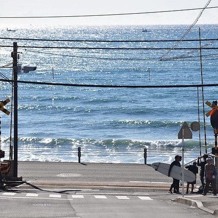

Japan through the calm of Wabi-Sabi
Japan through the calm of Wabi-Sabi
Join us on a journey through Japan’s charm — where ancient traditions meet modern wonders. After exploring its most captivating cities ourselves, we created this website to be your perfect guide for choosing destinations, planning your trip, and discovering the must-see spots across the country.



😢 You’re missing a lot!
Saudi Weather: Loading...
Japan Weather: Loading...
--:--:--
--:--:--